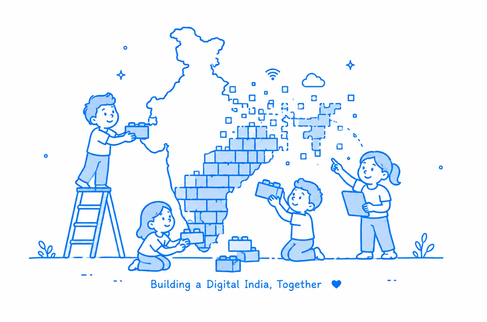

Build what matters
Some opportunities offer a job. Others offer the chance to shape what's next. We are looking for talent across Technology, Product, Architecture, Data and Business to solve complex challenges, build at scale, and create lasting impact.
We pair mission-driven purpose with the people who can realize it
When you embrace a growth mindset, your best is always ahead of you. Count on your colleagues to help you find new passions, unlock new possibilities, and work with purpose each and every day — because we're not just building India, we're building better lives for each other.
Building India — and better lives for each other
Growth culture
When you embrace a growth mindset, your best is always ahead of you. Count on your Essentials to help you find new passions, unlock new possibilities, and work with purpose each and every day.
Wellbeing
With countless ways to support your and your dependents' physical, mental, emotional and financial wellbeing, we have your holistic health covered.
Diversity and inclusion
We are committed to celebrating the diversity around us and its power to drive us forward together.

